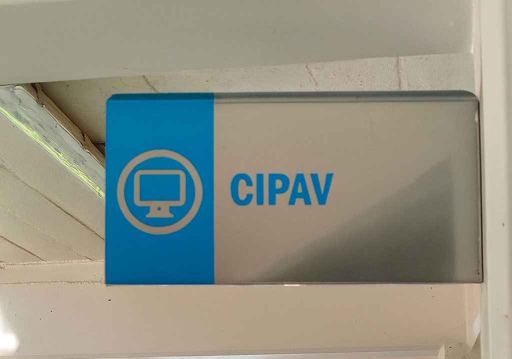
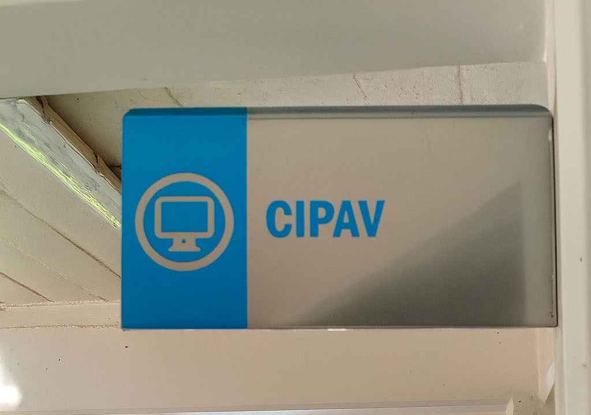

El CIPAV es un espacio diseñado para que estudiantes y egresados desarrollen proyectos audiovisuales, practiquen con equipo profesional y colaboren en la difusión de las actividades del Instituto. Nació como un centro de prácticas para carreras como Comunicación, Mercadotecnia, Diseño y Artes Visuales, y actualmente está abierto a toda la comunidad universitaria.
¿Qué puedes hacer en CIPAV?
- Realizar sesiones de foto, video, stop motion, cortometrajes y más.
- Usar la cabina de radio, el set de grabación o el aula de edición.
- Pedir equipo en préstamo para proyectos escolares.
- Participar en coberturas de eventos institucionales
- Colaborar en proyectos especiales como programas estudiantiles o festivales (por ejemplo, el GIFF)
¿Quién puede usar CIPAV?
- Estudiantes activos de cualquier carrera.
- Exalumnos que necesiten desarrollar proyectos.
- Personal administrativo, con fines institucionales.
¿Qué equipo puedes usar?
- Cámaras Canon y Sony para grabación y transmisión en vivo.
- Equipo de audio profesional: micrófonos Shure, mixer de audio.
- Aula de edición con computadoras de alto rendimiento.
- Set de grabación y cabina de radio.
Horario de atención
- Lunes a viernes, de 7:00 a.m. a 5:00 p.m.
¿Cómo solicitar el uso de equipo o espacios?
- Acude directamente a la oficina de CIPAV.
- Llena un formato con tus datos y la descripción del proyecto.
- Indica si necesitas equipo, espacios, o ambos.
- Revisa y firma el reglamento de uso.
- ¡Listo! Agenda tu espacio o retira el equipo según disponibilidad.
Consideraciones importantes:
El uso del equipo requiere responsabilidad y cuidado.
Algunas producciones, especialmente en temas de salud, deben contar con revisión académica para asegurar la veracidad del contenido.
¿Y si quiero difundir mi proyecto?
Puedes solicitar que tu contenido se publique en los medios institucionales. Solo debes especificarlo al llenar tu formato y el equipo de CIPAV lo canalizará.